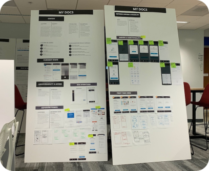

There are many adjectives that people use to describe taxes, including daunting, tedious, time-consuming, difficult, and painful. Needless to say this isn’t a task many people get excited about. Through the years, TurboTax has learned that part of these negative feelings stem from the burden of gathering tax forms and manually entering their tax data line by line into TurboTax.
The ethos of Intuit is “design for delight,” which was the spirit we expressed when offering customers new ways to get their data automatically entered, as well as refreshing the current experience to feel as painless as possible. For over a year, I’ve worked on scrum teams to envision and build an effortless tax prep experience that saves customers time and headache. By showing customers that TurboTax can support them through their tax journey, they’ve shown greater satisfaction and confidence in doing taxes themselves (reflected in higher conversion rates and positive customer feedback).
I worked with research and product management to pinpoint what made the process of gathering and entering data into TurboTax so difficult. We reviewed personas, qualitative research findings, quantitative data, and recordings of previous customer research sessions to discover that the origin of this customer pain, came from these characteristics about tax forms:
All in all, these characteristics lead customers to feel overwhelmed and tired since tax forms are a burden to collect, decipher, and enter.
TurboTax is a historical product, and has been the lead DIY tax prep software for over 30 years, but it has not invested heavilly in improving these entry experiences. For the past year our team has been responsible for creating seamless experiences that allow customers to skip the pain of typing. We envisioned that to be:
We pitched these ideas in senior leadership reviews with cross-functional VPs from a variety of consumer group business units and the GM. All in all this vision contributed to one of Intuit’s top strategic efforts.

With the vision we dreamt of for our customers, we started scoping. It’s important to understand that the capability of automatically entering data requires the cooperation, collaboration, and alignment with a variety of teams. And when I first joined this project, we were a team of 5 with 2 PMs, 2 developers, and 1 designer (me). With limited resources, time, and alignment, we took the big vision down to a couple key items. These key items made up our roadmap.
The other issue we faced was that all these experiences needed to be replatformed, meaning these original experiences were built in our legacy tech stack using old (some that haven’t been maintained and are in the process of being deprecated) widget experiences created by centralized teams. The technical lift to reach parity in our newer tech stack, would’ve required triple the amount of engineers, with double the amount of time.
We aimed to replatform these experiences, to utilize the new design system, create enhancements, and experiment with new experiences. One important lesson I learned at this point, was to stay adaptable, flexible, and communicative.
Based on all the information we identified above, my team and I went through the year delivering key capabilities to craft an effortless and seamless data entry experience.
A single place for customers to add and save their tax documents for years and years, ensuring proper documentation over their files. This helps them stress less about keeping track of paper documents scattered across shoeboxes, desk drawers, etc.
First, I audited several storage solution apps to identify best practices and gain inspiration. I met regularly with my team to work through the requirements and share design iterations. I worked with paper sketches in whiteboard sessions with my scrum team, and the central team who owned widgets we would implement into the storage solution.
Although it isn’t perfect, our team was able to deliver an MVP with an improved UI and experience. We validated these designs through guerrilla tests on the streets, where we approached people and walked them through an inVision prototype.
A tradeoff I had to make for this MVP experience was around how accessible the documents were and how documents actually get stored. To round out the experience, I would have loved to work on expanding this storage center’s full potential to meet our customer’s expectations. One of the biggest lessons I learned was how to work with centralized teams. In this design, I didn't have full creative control over how the widget worked or looked and my engineering team went through similar realizations with ownership. Together, our team learned that we should keep each other informed and provide constant feedback, to ensure centralized widgets meet the needs of our business unit.
Because tax forms come in various formats, we’ve seen several customers post and call in, asking whether or not they can upload copies of their tax docs, to have information automatically entered. For certain tax forms, we only offer the ability to import documents from financial institutions. For many, import is magic and helps customers speed through entering info, but for over 50% of our customers, they’re still relying on manually entering their data. We tested and introduced document upload in 3 of the most popular tax forms that customers receive, including W-2, 1098-T, and 1099-R to provide customers with another way to enter data that still avoids manual entry.
Our team explored several sitemaps, to determine the most logical way to introduce upload as an alternative data entry method. Because of the performance and constraints of the upload widget, we had to be mindful about when it’s right to show customers the ability to upload a document, rather than relying on something more technologically successful.
Overall this track of work helped us learn how the best method to enter data, is highly dependent on the customer’s situation and beliefs. As a product team, we’re aware of how the technology performs, but to a customer they’re trying to use the method that’s most convenient to them (which can be defined by device, form format, etc.). Moving forward, our team plans to explore offering customers the choice to choose how they enter their data, rather than pushing them into a specific type of data entry method.
The import experience in TurboTax allows customers to authenticate into their financial institution, to have tax info pre-populated into their return. The design changes we made in this flow streamlined the experience, to encourage customers to complete their import with little resistance and hesitation. We did this by ensuring that proper context and expectations were set up, to give customers the confidence that we’ll take this burden off their hands.
The 2 main projects we worked on this past year to streamline the import experience include creating benefit awareness prior to entering the flow, and payoff when customers successfully retrieve information. We brainstormed as many divergent ideas through sketches, lists of bullet points, etc. to align the team on actual enhancements.
The final design contradicted older data-in experiences that relied heavily on the explanation of how the technology worked, rather than leading with the benefit. In this final product, we A/B tested an experience where the new design was able to increase import utilization by 7%. Overall with more customers utilizing our import feature, we noticed an increase in S2C.